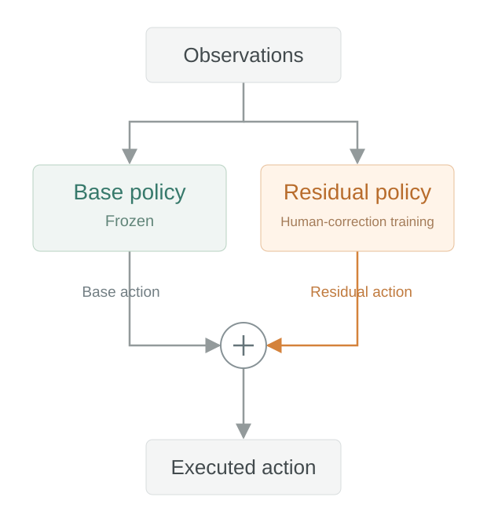

01 Dataset collection
Even for a human operator, repeating the same insertion consistently is difficult, making demonstration collection challenging. Thanks to Tae Hyun Bae.
02 Base policy
It can insert the box. Contact can still stop it.
Absolute-action demonstrations. Collected at the Original position only.
Same rollout · ep03 · timestamp-aligned
Synchronization details
All three views use ep_00003. The original video-to-log offset is +109.864 s, followed by the same 3× approach / 1× insertion edit. Wrist RGB and trajectory use the same nearest logged sample; maximum sampling mismatch is 64 ms, plus source-video frame quantization. The path shows the logged end-effector position, not an estimated fingertip. Its viewing direction comes from the original video projection matrix.
03 Residual policy
Correct alignment before insertion.

Related paper: CR-DAgger ↗
04 Human guidance
Cyan: human correction vector
05 Evaluation
Orange: residual correction toward −x
The base policy learned absolute actions at the Original position only.
With the target shifted back by 3 cm, the base policy alone fails.
Dashed: Original corner · Blue: shifted position
Position cues are visual references; −3 cm is the experiment setting.